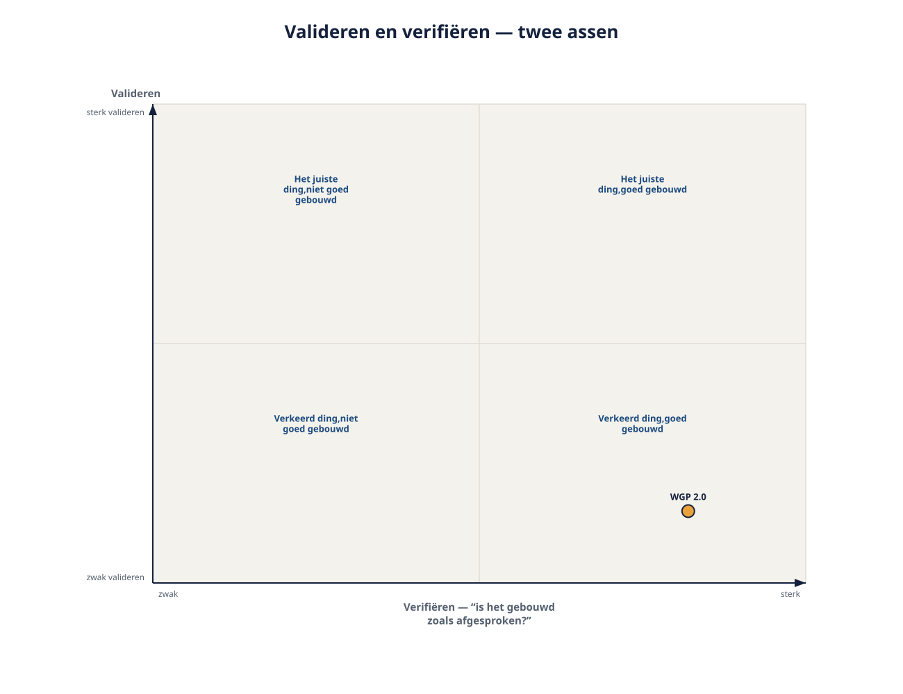
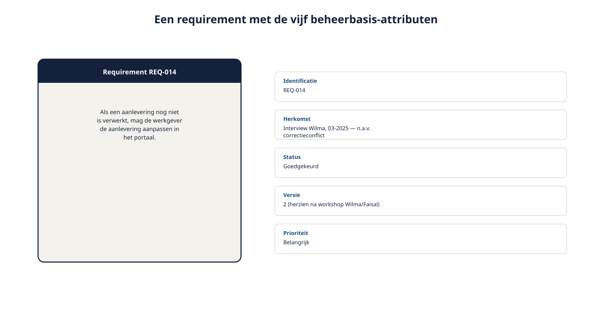
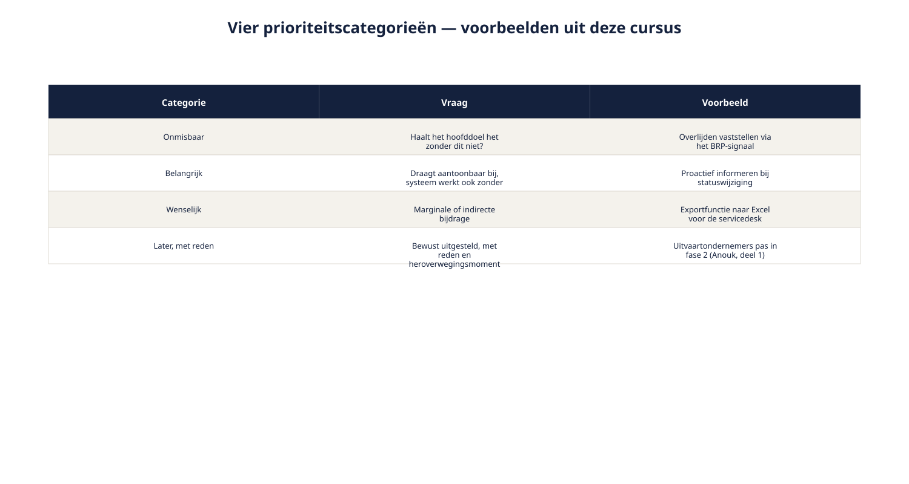

Cursus Requirements engineering · Niveau 1 (CPRE Foundation Level) · Deel 9 van 30
Twee citaten, één stuurgroep.
"Toen het budget op was, konden we alleen maar zeggen: alles is verplicht." En: "Er zijn honderden changes doorgevoerd. Niemand kon meer uitleggen waarom scherm 12 bestond." Beide citaten uit de post-mortem van WGP 2.0 delen dezelfde oorzaak: geen structuur om een requirement méér te laten zijn dan de tekst waarin hij was opgeschreven. Dit deel bouwt die structuur — de beheerbasis — voor het Nabestaandenloket bij Meridiaan Pensioen.
9secties
±1,5uleestijd + werkboek
5controlevragen
R6+R7bevindingen gesloten
Positionering. Deze cursus is een voorbereiding op de CPRE Foundation Level-certificering van IREB en is uitdrukkelijk geen vervanging van het officiële syllabus- en examenmateriaal van IREB, te raadplegen via ireb.org. Alle formuleringen, figuren en werkvormen in dit materiaal zijn van Ductus; studeer voor het examen altijd óók de bron.
Niveau 1: ➊ Wat RE is → ➋ Fundamentele principes → ➌ Belanghebbenden en bronnen → ➍ Elicitatie basistechnieken → ➎ Requirementssoorten en werkproducten → ➏ Formuleringssjabloon → ➐ Modelgebaseerd → ➑ Kwaliteitseisen → ➒ Beheerbasis (hier) → ➓ Examentraining + capstone
01
Waar dit deel over gaat
⏱ 10 min
De delen 6, 7 en 8 gaven u vormen voor een requirement: tekst met een sjabloon, een model, een meetbare kwaliteitseis. Dit deel gaat over wat er ná het opschrijven moet gebeuren: hoe u toetst of het nog steeds klopt, hoe u kiest wat eerst moet, en hoe u een requirement herleidbaar houdt wanneer alles verandert — wat het altijd doet.
Aan het eind van dit deel kunt u:
het verschil tussen valideren en verifiëren toepassen;
een requirement voorzien van de attributen die de beheerbasis vormen: identificatie, herkomst, status, versie, prioriteit;
requirements prioriteren op basis van hun bijdrage aan doelen, niet op basis van wie het hardst roept;
traceerbaarheid opzetten tussen doel, gebruik, gedrag en test;
een wijziging beoordelen op impact voordat hij wordt geaccepteerd.
Dit deel sluit bevinding R6 en bevinding R7 — en daarmee is niveau 1 inhoudelijk compleet.
02
De casus: twee citaten, één stuurgroep
⏱ 8 min
Twee fragmenten uit de post-mortem, beide eerder genoemd in deze cursus, komen hier samen.
"Toen het budget op was, vroeg de stuurgroep wat eruit kon. We konden alleen maar zeggen: alles is verplicht."
"Er zijn honderden changes doorgevoerd. Bij oplevering kon niemand meer uitleggen waarom scherm 12 bestond."
Het eerste citaat is bevinding R6, het tweede bevinding R7. Beide delen dezelfde onderliggende oorzaak: er was geen structuur om een requirement iets méér te laten zijn dan de tekst waarin hij was opgeschreven. Geen prioriteit om op terug te vallen toen er moest worden gekozen. Geen herkomst om op terug te vallen toen er moest worden verantwoord. Dit laatste deel van het inhoudelijke programma van niveau 1 bouwt die structuur: de beheerbasis.
03
Valideren versus verifiëren
⏱ 14 min
Voordat u de beheerbasis bouwt, eerst een onderscheid dat er dwars doorheen loopt en dat al vanaf deel 2 is aangekondigd, maar nog niet scherp is uitgewerkt.
Verifiëren beantwoordt: is dit gebouwd zoals afgesproken? Een technische, toetsbare vraag: komt de bouw overeen met de vastgelegde requirement? Dit is waar testen zich, in de volle breedte, op richt.
Valideren beantwoordt: is dit wat de belanghebbende werkelijk nodig had? Een inhoudelijke vraag die niet door de tekst zelf te beantwoorden is — u kunt een requirement perfect verifiëren en toch het verkeerde ding gebouwd hebben, als de requirement zelf al niet aansloot bij de echte behoefte.
Dit onderscheid verklaart een deel van wat er bij WGP 2.0 misging: het bouwteam verifieerde nauwgezet tegen het functioneel ontwerp — ze bouwden wat er stond. Wat ontbrak, was doorlopende validatie: toetsen of wat er stond nog steeds overeenkwam met wat belanghebbenden nodig hadden, ook naarmate het project vorderde en het inzicht groeide.

Figuur 9-1 — valideren en verifiëren als twee assen — "het juiste ding" versus "het ding juist" — met WGP 2.0 gepositioneerd als sterk in verifiëren, zwak in valideren
Technieken om te valideren
Een walkthrough — de requirement samen met de belanghebbende doorlopen en laten navertellen, vergelijkbaar met het samenvatten uit deel 4 — een review door iemand die de requirement niet zelf schreef, en het voorleggen van een mockup of prototype voordat er iets gebouwd wordt. Al deze technieken hebben één ding gemeen: ze toetsen vóórdat de bouw begint, niet erna.
Controlevragen
Uit Werkboek deel 9, Opdracht 9.1 — valideren of verifiëren?
1Ruben legt een mockup van het meldformulier voor aan drie nabestaanden uit een cliëntenpanel. Is dit valideren of verifiëren?Toon antwoord
Valideren. Het toetst of het ontwerp de echte behoefte van de nabestaande dekt, vóór de bouw — niet of iets al gebouwd is zoals afgesproken.
2Wilma leest de uitgewerkte requirements door en zegt: "Dit lost het probleem van de servicedesk niet meer op zoals we het nu ervaren — er is de afgelopen maand iets veranderd." Is dit valideren of verifiëren, en waarom is dit het scherpste voorbeeld van de twee?Toon antwoord
Valideren. Wilma signaleert dat de vastgelegde eis niet meer aansluit bij de actuele behoefte — precies waarom valideren doorlopend moet blijven, ook nadat iets ooit correct is gevalideerd: de werkelijkheid kan intussen zijn veranderd.
04
De beheerbasis: attributen
⏱ 14 min
Een requirement is meer dan zijn tekst. Vanaf nu behandelt u elke requirement als tekst plus een vaste set attributen — de beheerbasis.
Identificatie. Een uniek kenmerk, geïntroduceerd in deel 5, waarmee u naar precies déze requirement kunt verwijzen, ongeacht de vorm (tekst, model, backlogitem).
Herkomst en rationale. Wie of wat deze requirement heeft opgeleverd, en waarom hij bestaat — opgehaald in de delen 3 en 4, vastgelegd samen met de requirement zelf, in elke vorm.
Status. Waar deze requirement staat in zijn levensloop: voorgesteld, goedgekeurd, geïmplementeerd, getest, of afgewezen. Status is geen bijzaak — een requirement zonder status is een requirement waarvan niemand weet of hij nog geldt.
Versie. Requirements veranderen. Een versie laat zien welke variant van een requirement op een bepaald moment gold, zodat een discussie over "wat stond er nou eigenlijk" te beantwoorden is.
Prioriteit. Hoe zwaar weegt deze requirement ten opzichte van andere, wanneer er gekozen moet worden? Dit is het attribuut waar bevinding R6 om draait, en het krijgt in sectie 5 een eigen uitwerking.

Figuur 9-2 — een requirement als kaartje met de vijf attributen ernaast, ingevuld voor één requirement uit het Nabestaandenloket
Deze vijf attributen zijn onafhankelijk van de vorm die u in deel 5 koos. Een beslistabel heeft evengoed een identificatie, herkomst, status, versie en prioriteit nodig als een backlogitem of een alinea tekst. De hoeveelheid administratie rond die attributen mag wél verschillen — weer de regel uit deel 2: zwaarte naar risico.
05
Prioriteren: bijdrage, niet volume
⏱ 18 min
Bij WGP 2.0 was alles "verplicht" omdat er nooit een basis was om onderscheid te maken. Prioriteit die pas ontstaat op het moment dat het geld op is, is geen prioritering — het is paniek.
Het Ductus-uitgangspunt: prioriteit volgt uit aantoonbare bijdrage aan een doel, niet uit wie de requirement heeft ingebracht of hoe hard daarop is aangedrongen. Het doelmodel uit deel 7 is hiervoor het instrument — een requirement die zich niet laat terugvoeren op een tak in het doelmodel, heeft per definitie een zwakke prioriteitsbasis, ongeacht wie erom vraagt.
Onmisbaar. Zonder dit haalt het systeem zijn hoofddoel aantoonbaar niet. Bij het Nabestaandenloket: het kunnen vaststellen van een overlijden via het BRP-signaal — zonder dit werkt het hele doel "onterechte doorbetaling voorkomen" niet.
Belangrijk. Draagt aantoonbaar bij aan een subdoel, maar het systeem functioneert — zij het minder goed — zonder. Bijvoorbeeld: proactief informeren bij statuswijziging.
Wenselijk. Marginale of indirecte bijdrage. Bijvoorbeeld: een exportfunctie naar Excel voor de servicedesk — nuttig, niet dragend voor een doel.
Later, met reden. Bewust uitgesteld, met een expliciete reden en — indien bekend — een moment waarop het wordt heroverwogen. "Later" zonder reden is in de praktijk hetzelfde als "nooit besproken", en dat is precies waar WGP 2.0 in verzeilde.

Figuur 9-3 — de vier categorieën met de requirements uit deze cursus tot nu toe verdeeld erover
Prioriteit is niet statisch
Prioriteit die één keer wordt vastgesteld en daarna nooit meer wordt bekeken, is even riskant als geen prioriteit. Naarmate inzicht groeit kan een "wenselijk" requirement plotseling "belangrijk" blijken, of andersom. De vaste categorieën zijn geen eenmalig stempel maar een terugkerende vraag.
Wie beslist?
Zoals steeds in deze cursus: de requirements engineer stelt de bijdrage vast en brengt de categorieën in kaart — de knoop, vooral bij budgetdruk, ligt bij de opdrachtgever of de stuurgroep (deel 1, de rolgrens). Wat verandert ten opzichte van WGP 2.0 is dat die knoop nu wordt doorgehakt met een overzicht van bijdragen in de hand, in plaats van in paniek zonder enig houvast.
Controlevragen
Uit Werkboek deel 9, Opdracht 9.3 — prioriteren met de vier categorieën
1"Twijfelgevallen in de koppeling tussen melding en deelnemer worden aan een medewerker voorgelegd." In welke categorie hoort dit, en waarom?Toon antwoord
Onmisbaar. Dit is direct gekoppeld aan het hoofddoel zelf: onterechte doorbetaling voorkomen.
2"Er komt een chatfunctie voor vragen tijdens het invullen." Waarom wordt dit vaak fout gecategoriseerd als "wenselijk" in plaats van "later-met-reden", en wat is het onderscheid?Toon antwoord
Dit is mogelijk een oplossing voor "minder bellen", maar nog niet getoetst of dit de beste vorm is — vergelijk het doorvragen uit deel 4. "Later-met-reden" erkent dat er wél een mogelijke bijdrage is, maar dat eerst iets anders moet gebeuren (hier: doorvragen) voordat een oordeel te vellen is. Dat is een informatievere categorie dan een simpel "wenselijk", dat suggereert dat de bijdrage al is vastgesteld en marginaal is.
06
Traceerbaarheid
⏱ 14 min
Traceerbaarheid is het vermogen om van elke requirement terug te redeneren naar zijn herkomst, en vooruit naar wat hij oplevert.
Terugwaartse traceerbaarheid: van requirement naar bron. Welk doel (deel 7), welke belanghebbende (deel 3) rechtvaardigt deze requirement? Dit is de vraag die bij WGP 2.0's scherm 12 niet meer te beantwoorden was.
Voorwaartse traceerbaarheid: van requirement naar wat ermee gebeurt. Welk ontwerp, welke test, welk deel van het gedragsmodel (deel 7) hoort bij deze requirement?
In de praktijk is traceerbaarheid meestal geen apart document maar een kwestie van consequent verwijzen: elke requirement noemt zijn identificatie, en elk model, elke test en elk backlogitem verwijst terug naar die identificatie. Voor een klein systeem als het Nabestaandenloket kan dit een eenvoudige tabel zijn; bij grotere systemen wordt dit ondersteund door gespecialiseerde tooling.
Figuur 9-4 — een traceerbaarheidsketen van belanghebbende → doel → requirement → gedragsmodel → test, met identificaties bij elke schakel
De toets
Pak een willekeurige requirement, model of backlogitem uit dit niveau, en probeer de keten in beide richtingen te volgen. Lukt dat niet, dan is er een schakel die ontbreekt — en dat is precies het moment waarop scherm 12 ontstaat.
07
Wijzigingsbeheer: de vergeten impactanalyse
⏱ 16 min
Bevinding R7 noemde niet alleen het ontbreken van traceerbaarheid, maar specifiek de ruim vierhonderd wijzigingsverzoeken die tijdens de bouw van WGP 2.0 zijn doorgevoerd zonder impactanalyse en zonder spoor terug naar de oorspronkelijke eis.
Een gezond wijzigingsproces bestaat uit vier stappen, die stuk voor stuk klein zijn maar die bij WGP 2.0 alle vier zijn overgeslagen:
Vastleggen. De wijziging wordt zelf als voorstel vastgelegd, met dezelfde attributen als elke requirement: identificatie, herkomst (wie vraagt dit en waarom), status "voorgesteld".
Impact bepalen. Via de traceerbaarheidsketen: welke requirements, modellen, tests raakt deze wijziging? Dit is geen educated guess maar een systematische doorloop van de keten — precies waarom traceerbaarheid meer is dan administratieve netheid.
Prioriteit heroverwegen. Verschuift deze wijziging de prioriteit van andere requirements? Een wijziging die zelf "onmisbaar" is, kan een eerder "belangrijk" requirement terugzetten naar "later" — dat gebeurt niet automatisch, het moet expliciet worden afgewogen.
Besluit en vastlegging. Wie beslist — meestal dezelfde stuurgroep of opdrachtgever als bij reguliere prioritering — neemt het besluit, en de requirement krijgt een nieuwe versie met het besluit erbij vastgelegd.
Vier stappen, geen van alle ingewikkeld. Het punt is niet complexiteit maar consequentie: elke wijziging, hoe klein ook, doorloopt ze. Bij WGP 2.0 leek elke individuele wijziging op zichzelf klein genoeg om deze stappen over te slaan — en dat is precies hoe veertig kleine uitzonderingen samen een project onbeheersbaar maken.
Wat verandert er als u iteratief werkt?
De vier stappen worden niet formeler naarmate u iteratiever werkt — ze worden juist lichter en frequenter, opgenomen in de gewone refinement van een backlog. Een nieuw of gewijzigd backlogitem doorloopt dezelfde vier vragen, alleen in minuten in plaats van in een formeel wijzigingsformulier. De valkuil verschuift wel: in een snelle omgeving is de verleiding groter om deze vier vragen "want het is maar een kleine wijziging" over te slaan — precies de reden waarom WGP 2.0 in de knel kwam, alleen dan versneld.
Controlevraag
Uit Werkboek deel 9, Opdracht 9.5 — een wijziging beoordelen
1Anouk komt met een wijzigingsverzoek: "We willen ook een sms-herinnering sturen als een melding drie dagen onvolledig blijft." Wat is de meest voorkomende misstap wanneer Ruben deze wijziging beoordeelt, en waarom is die een probleem?Toon antwoord
De meest voorkomende misstap is dat Ruben bij stap 3 (prioriteit heroverwegen) zelf een prioriteit toekent, in plaats van een advies te formuleren. Dat is een probleem omdat het de rolgrens uit deel 1 doorbreekt: de requirements engineer levert feiten, opties en consequenties — bijvoorbeeld dat de wijziging raakt aan de bestaande toestand "Aanvulling gevraagd" uit het gedragsmodel, en een externe afhankelijkheid met een sms-provider met zich meebrengt — maar het besluit over prioriteit ligt bij Hetty of de stuurgroep, niet bij Ruben zelf.
08
Wat het examen hierover vraagt
⏱ 12 min
Deze cursus is een voorbereiding op de CPRE Foundation Level-certificering van IREB en uitdrukkelijk geen vervanging van het officiële syllabus- en examenmateriaal, te raadplegen via ireb.org. Verwacht bij dit onderwerp vragen die vragen om:
een gegeven activiteit te classificeren als valideren, verifiëren, of allebei;
de vijf attributen van de beheerbasis te benoemen en van elkaar te onderscheiden;
een requirement in de juiste van de vier prioriteitscategorieën te plaatsen, onderbouwd vanuit een doelmodel;
terugwaartse en voorwaartse traceerbaarheid te onderscheiden, en de vier stappen van wijzigingsbeheer in de juiste volgorde te herkennen.
Een veelvoorkomende valkuil
Vragen over prioriteit testen vaak of u weet dat prioriteit niet statisch is — een uitspraak als "eenmaal vastgestelde prioriteit hoeft niet meer te worden herzien" is een klassieke omkeer-valkuil en is onwaar.
Bevinding R6 (geen prioritering, geen basis om te kiezen bij budgetdruk) is gedekt door prioriteit die volgt uit aantoonbare bijdrage aan doelen, vastgelegd in vier heldere categorieën, herzien zodra inzicht verandert.
Bevinding R7 (honderden wijzigingen zonder impactanalyse en zonder spoor naar de oorspronkelijke eis) is gedekt door de beheerbasis — identificatie, herkomst, status, versie — traceerbaarheid in beide richtingen, en een wijzigingsproces van vier stappen die geen enkele wijziging overslaat.
Met dit deel is niveau 1 inhoudelijk compleet: alle zeven bevindingen uit de post-mortem van WGP 2.0 zijn gedekt met concreet, toepasbaar gereedschap. Ruben kan nu, wanneer Anouk of Hetty over budget of scope beslist, een overzicht van bijdragen op tafel leggen in plaats van een schouderophalen. En wanneer een wijziging binnenkomt, kan hij binnen een paar minuten laten zien wat hij raakt — in plaats van dat pas bij oplevering te ontdekken.
Vooruit naar deel 10. Deel 10 brengt het gereedschap van niveau 1 samen in de examentraining voor het CPRE Foundation Level en een capstone waarin u een compleet requirementspakket voor een afgebakend deel van het Nabestaandenloket verdedigt.
Verder naar deel 10
Deel 10 is het laatste deel van niveau 1: examentraining voor het CPRE Foundation Level, gevolgd door een capstone waarin u een compleet requirementspakket voor een afgebakend deel van het Nabestaandenloket verdedigt tegen kritische rollen. Neem de beheerbasis uit dit deel mee — u zult hem in de capstone letterlijk moeten invullen.